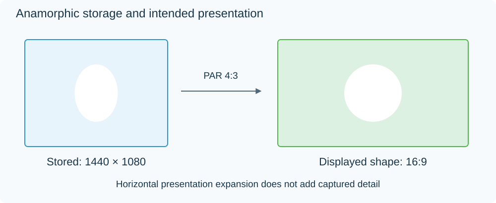

Anamorphic Video
Anamorphic video uses a stored picture grid whose proportions differ from the intended displayed picture. In a common digital example, a 1440 × 1080 grid is presented as 16:9 by making its samples wider than square.
This describes digital storage and presentation. It does not prove that a film was photographed through an anamorphic camera lens; a digitally anamorphic recording can come from an ordinary camera.

Original proportional example: 1440 × 1080 samples with PAR 4:3 have the same display proportions as 1920 × 1080 square pixels. The drawing shows presentation, not newly captured detail.
| Property | Example value |
|---|---|
| Stored dimensions | 1440 × 1080 |
| Stored width-to-height ratio | 4:3 |
| Pixel aspect ratio | 4:3 |
| Intended display aspect ratio | 16:9 |
The advantage is that the format can represent a wide image within a constrained sample grid. The tradeoff is fewer horizontal samples than an otherwise comparable 1920 × 1080 square-pixel recording. The actual quality also depends on the source and compression.
A squeezed picture usually has an explanation
If an Emby app or another player displays this example as 4:3, it has not applied the intended pixel aspect ratio, or the file lacks correct signaling. People look too thin and circles become narrow ovals. Stretching every file to 16:9 would fix this example while distorting a genuine 4:3 recording.
A correctly handled anamorphic source can be displayed directly, or converted during processing to a square-pixel output. The output should retain the same intended shape. Letterboxing is a different technique: it adds bars around a picture instead of describing wider or taller pixels.
For older disc and broadcast material, inspect the display ratio as well as the width and height. The dimensions alone do not tell you whether the file is anamorphic.